When you open GAMLj → Mixed Model in Jamovi, you get a single panel that asks you to slot variables into roles and then tick a handful of options. Most of what looks like a long list of choices reduces to a small set of decisions. This part walks through each region of the window using the face-recognition study as the running example.
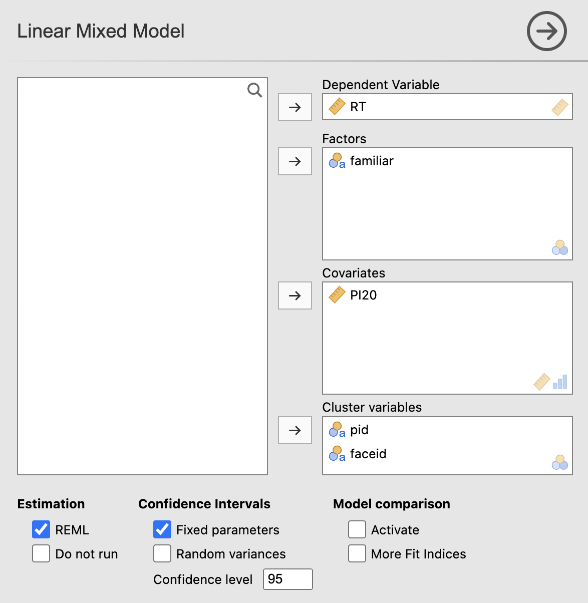
familiar is a factor, PI20 is a covariate, and both pid (participant) and faceid (item) are cluster variables.The right-hand column has four slots. Jamovi cares which slot you use because it changes how each variable is treated downstream.
| Slot | What goes here | In this study |
|---|---|---|
| Dependent variable | The continuous outcome you are predicting. | RT (reaction time, ms) |
| Factors | Categorical predictors — groups or conditions. | familiar (familiar / unfamiliar) |
| Covariates | Continuous predictors. | PI20 (self-rated face perception, z-scored) |
| Cluster variables | Variables that identify repeated or grouped observations. Tells the model which rows are not independent. | pid and faceid |
Once you press the arrow at the top right you get to the next panel where you decide which fixed effects and which random effects you want. The distinction is usually the bit that trips people up.
As we saw in the worksheet we used earlier, Jamovi expresses random terms in Wilkinson notation — the same notation R uses for lme4. The bit inside the parentheses says what varies and across what:
(1 | pid) — random intercept across participants (each participant has their own baseline RT).(1 + familiar | pid) — random intercept and random slope of familiar across participants (each participant has their own baseline and their own familiarity effect).(1 + PI20 | faceid) — random intercept across faces and a random slope of PI20 across faces.Once the cluster variables are set, Jamovi opens a Random Effects panel with two boxes side by side. The left box (Components) lists every possible random term — every intercept and slope you could include. The right box (Random Coefficients) lists the ones actually in your model. You drag terms from left to right with the arrow button.
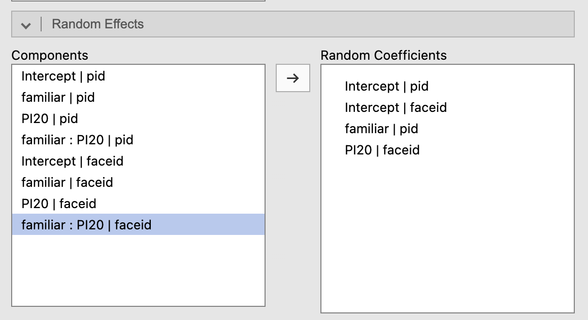
Intercept | pid, Intercept | faceid, familiar | pid, and PI20 | faceid — the four terms that make up (1 + familiar | pid) + (1 + PI20 | faceid).familiar across participants, you almost always also need Intercept | pid in the right-hand box. Same for PI20 | faceid: include Intercept | faceid too. Fitting a random slope without its corresponding random intercept implies that clusters share a baseline but differ in slope — a strong and usually implausible assumption. So in practice, every random-slope term you drag across should have the matching intercept dragged across with it.
A random slope without a random intercept forces every participant (or face) to start from the same baseline RT, but lets them differ in how the predictor moves them away from that shared baseline. For most data — including this one — that's the wrong constraint: participants obviously differ in baseline speed, so the model needs the freedom to let those baselines vary. Including both terms also lets Jamovi estimate the correlation between intercept and slope — which is the entire point of the "random parameter correlations" table you'll see in Part B.
It doesn't, really. The fit will sometimes succeed with a non-identifiable slope, sometimes warn you, and sometimes silently lean on regularisation. The check is on you: ask "does this predictor actually vary within each level of the cluster?" before adding the slope.
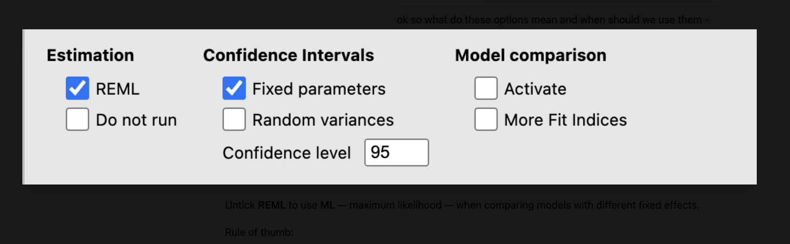
REML (restricted maximum likelihood) gives slightly less biased estimates of the random-effect variances. ML (maximum likelihood, REML unticked) underestimates variance components a little, because it doesn't account for the degrees of freedom used up by estimating the fixed effects. The size of that bias depends on how many clusters you have: with hundreds of participants and items the gap is tiny; with a dozen, it can be appreciable.
When you tick Model comparison → Activate, GAMLj (via lme4's anova()) refits both the nested and full models with ML to compute the likelihood-ratio χ² and ΔR² — regardless of whether REML is ticked. The REML setting controls how variance components, fixed-effect standard errors, and confidence intervals are reported in the rest of the output; the comparison itself is always done on ML refits.
Do not run simply stops Jamovi from re-fitting after every small change — useful when you're setting up a complex model and don't want each tick to trigger a re-estimation.
Activate turns on a formal likelihood-ratio comparison of your current model against a simpler "nested" version that drops the fixed-effect predictors. This is an additional tweak that lets you separate out how much of the observed variance the random effects alone account for (a model called nested in the output) from a model that includes both random and fixed effects (called full). I'll come back to this in Part B because it illustrates the kind of extra information you get from a linear mixed model at no extra cost — sometimes that information is very interesting, and we would be entirely ignorant of it in the ANOVA land many people live in. More Fit Indices adds AIC, BIC, log-likelihood — useful when you're comparing several specifications by something other than a single LRT.
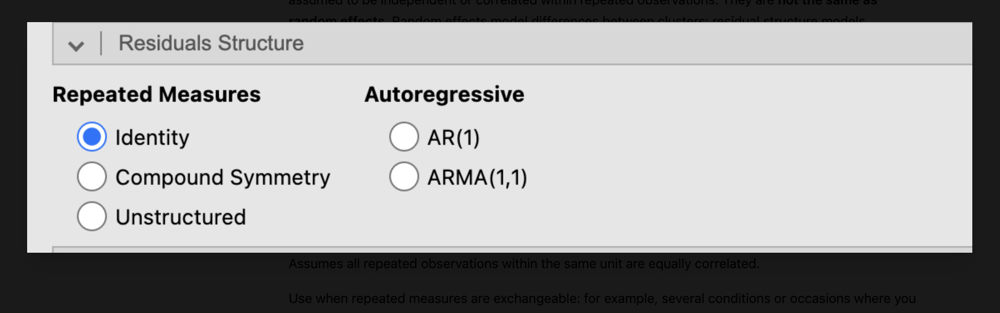
This panel controls how the model handles leftover correlation in residuals — correlation that the random effects didn't already mop up. It is not the same as random effects.
| Option | What it assumes | When to use |
|---|---|---|
| Identity | Residuals are independent with equal variance. | Default. Use unless you have a clear repeated-measures structure the random effects don't capture. |
| Compound symmetry | All pairs of repeated observations within a cluster are equally correlated. | Exchangeable repeated measures (e.g. several conditions per person where order doesn't matter). |
| Unstructured | Every residual variance/covariance estimated separately. | Few repeated levels, lots of data. Flexible but unstable. |
| AR(1) | Observations closer in order are more correlated than ones further apart. | Ordered repeated measures — trials, days, sessions, especially equally spaced. |
| ARMA(1,1) | A richer serial-dependence structure than AR(1). | Only if you have a strong reason to expect more complex time-based correlation. |
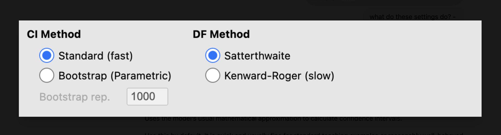
Alex's exercise dataset comes from a face-recognition study. 60 participants each saw a series of celebrity faces (Hollywood and Dutch — so a face appears in only one familiarity condition) and pressed a key as soon as they recognised whether the face was familiar or unfamiliar. Each participant also gave a self-rated face perception score (PI20, z-scored: 0 = average, positive = worse than average).
| Column | Meaning |
|---|---|
pid | participant identifier |
faceid | stimulus identifier |
familiar | 1 = familiar, 0 = unfamiliar |
PI20 | participant's self-rated face perception (z-scored) |
RT | reaction time (ms) — the outcome |
The dataset has 1,701 trials from 60 participants and 40 faces. Because the study ran online, not everyone finished all trials — the data are unbalanced. An LMM uses all of it, with no aggregation.
Here is what we are fitting:
RT ~ 1 + PI20 + familiar + PI20:familiar
+ (1 + familiar | pid)
+ (1 + PI20 | faceid)The model above broken down in words — remember, in that equation, the parameter to the left of the ~ symbol is what we are predicting (in this case RT):
1 + PI20 + familiar + PI20:familiar. That's an intercept (1), a main effect of PI20 (+ PI20), a main effect of familiarity (+ familiar), and their interaction (+ PI20:familiar).(1 + familiar | pid). Each participant has their own baseline RT (random intercept) and their own familiarity effect (random slope of familiar).(1 + PI20 | faceid). Each face has its own baseline RT (random intercept) and a face-specific PI20 effect (random slope of PI20). Remember the 1 in each case is the intercept element.familiar across faceid, and no random slope of PI20 across pid?familiar doesn't vary within a face — each face is either familiar or unfamiliar for everyone. PI20 doesn't vary within a participant — each person has one score. Random slopes are estimated from within-cluster variability; if the predictor doesn't vary within the cluster, there's nothing to estimate.
Jamovi runs the model via GAMLj. With Model comparison → Activate ticked and REML on (the default), the generated R call is:
GAMLj3::gamljmixed(
formula = RT ~ 1 + PI20 + familiar + PI20:familiar
+ (1 + familiar | pid)
+ (1 + PI20 | faceid),
data = data,
nested_re = ~ (1 + familiar | pid) + (1 + PI20 | faceid)
)The nested_re line tells Jamovi which simpler "nested" model to compare against — here, the same random structure with no fixed-effect predictors. We'll unpack what the comparison gives us in the next section.
Have a look at the footer of the model info table — it says "All covariates are centered to the mean." Jamovi does this automatically. The Covariates Scaling panel is where you can change it:
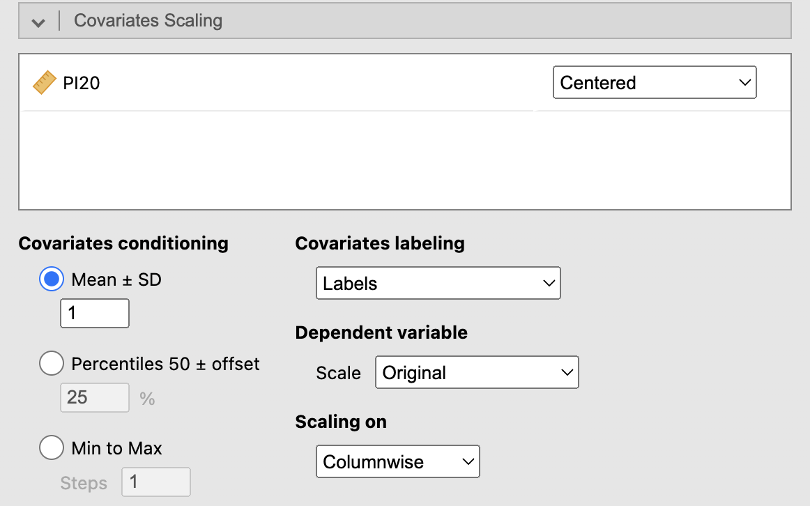
Centring matters because it changes what zero means for a covariate, which in turn changes how the intercept is interpreted. With PI20 centred, the intercept gives the predicted RT at the mean PI20 in the sample (and at the reference level of familiar). If PI20 were not centred, the intercept would instead be the predicted RT when PI20 = 0 in raw units — which, depending on the scale, may not correspond to anyone in the dataset and is harder to interpret.
With Model comparison → Activate ticked, Jamovi compares two models:
(1 + familiar | pid) + (1 + PI20 | faceid) with no fixed-effect predictors.The output gives several R² values that can look confusing at first because they're answering different questions.
| Model | Type | R² | LRT χ² | p |
|---|---|---|---|---|
| Full | Conditional | 0.767 | 1984.98 | <.001 |
| Full | Marginal | 0.228 | 34.10 | <.001 |
| Nested | Conditional | 0.574 | 1950.88 | <.001 |
| Nested | Marginal | 0.000 | 0.00 | 1.000 |
| ΔR² | Comparison | 0.193 | 53.61 | <.001 |
Take-home: adding PI20 and familiarity buys us about 19 extra percentage points of explained variance (ΔR² = .193), but a substantial chunk of the full model's total fit (.539) is still coming from participant and face baselines differing — not from the predictors of interest. That's something a traditional ANOVA on subject means would have hidden entirely.
The two numbers are close, but the small gap (.035) has a meaning. When you add PI20, familiar, and the interaction, the fixed-effect share of variance goes from 0 to .228 (a gain of .228). But the random-effect share shrinks from .574 to .539 (a loss of .035). PI20 is a participant-level variable, so some of what the nested model was attributing to "people just differ from each other" is now correctly claimed by PI20 itself. Variance got reassigned rather than newly explained. The net improvement in total fit is therefore .228 − .035 = .193, which is exactly the ΔR².
Equation: ΔR² = (marginal R² of full) − (shrinkage in random-effect variance).
The omnibus table gives one row per predictor and asks: "does this variable explain meaningful variation in RT?" For a factor it tests whether groups differ; for a covariate, whether the slope differs from zero. For an interaction, whether the effect of one predictor depends on the level of the other.
| Predictor | F | df | df (res) | p |
|---|---|---|---|---|
| PI20 | 19.9 | 1 | 77.0 | <.001 |
| familiar | 13.3 | 1 | 53.6 | <.001 |
| PI20 × familiar | 0.20 | 1 | 40.3 | .657 |
So PI20 and familiarity both matter overall; the interaction does not. This table tells you whether a predictor matters but not the direction or size. For that, the parameter estimates table is next.
This is the most interpretable fixed-effects table.
| Term | Estimate | SE | 95% CI | t | p |
|---|---|---|---|---|---|
| (Intercept) | 338.2 | 7.04 | 324.4, 352.0 | 48.02 | <.001 |
| PI20 | +54.3 | 12.17 | 30.4, 78.2 | 4.46 | <.001 |
| familiar (1 − 0) | −23.7 | 6.49 | −36.4, −10.9 | −3.65 | <.001 |
| PI20 × familiar | −8.8 | 19.62 | −47.3, 29.7 | −0.45 | .657 |
familiar (unfamiliar = 0).The fixed-effects table tells you about differences (slopes, contrasts) but it doesn't directly give you predicted RTs at meaningful values. That's what Estimated Marginal Means is for. You add a variable (or interaction term) to the right-hand box and Jamovi reports model-predicted RTs at chosen levels of it, with CIs.
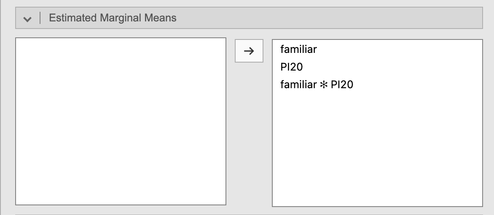
familiar, at low/mean/high PI20, and at every combination of the two.Jamovi then produces three tables — marginal means for each predictor on its own, and a joint table for the interaction:
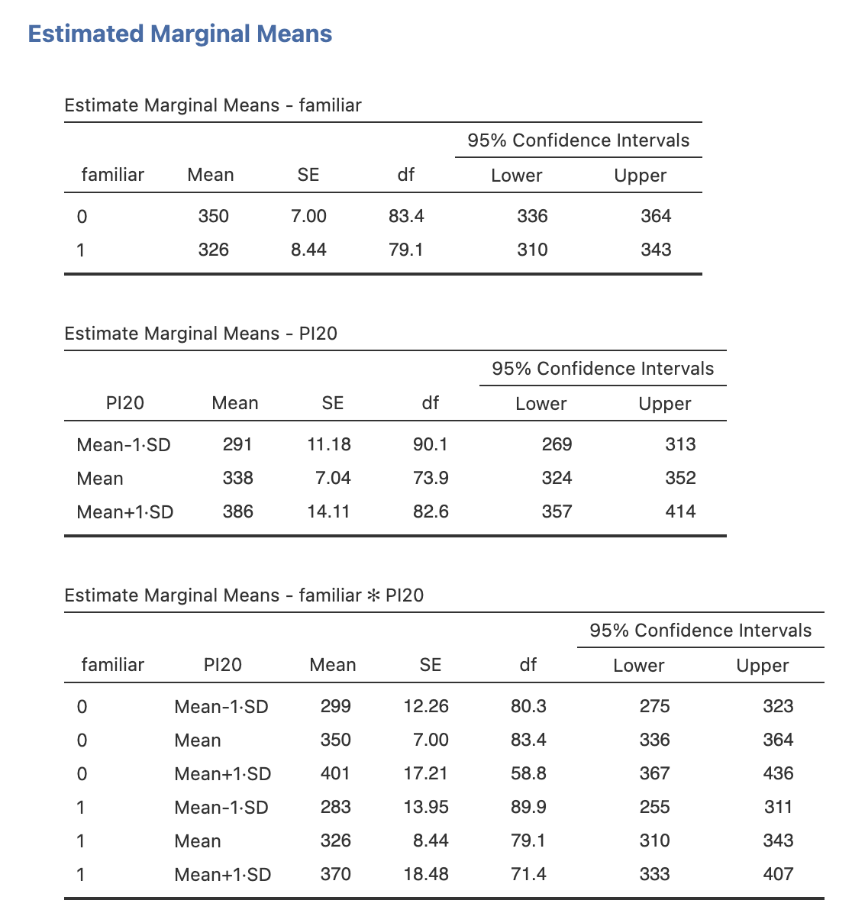
A few things worth pointing out:
familiar: unfamiliar = 350 ms, familiar = 326 ms — a 24 ms gap, which matches the familiar coefficient (−23.7) from the parameter estimates table.familiar × PI20 table: predicted RTs at every combination. This is the table to look at when you want to describe the interaction in concrete units (even when, as here, it isn't significant).Set in the Covariates Scaling panel we saw earlier — the "Covariates conditioning" radio button. The default is Mean ± 1 SD with the step set to 1, which gives the three rows at low/mean/high PI20. You can change it to percentiles, or to Min-to-Max with however many steps you like.
This is "free" extra information you get from the LMM. It tells you how much variation exists across clusters — and in this study, the answer is very different for participants and for faces.
| Group | Term | Variance | SD | ICC |
|---|---|---|---|---|
| pid | (Intercept) | 2474 | 49.7 | 0.504 |
| pid | familiar slope | 518 | 22.8 | |
| faceid | (Intercept) | 276 | 16.6 | 0.102 |
| faceid | PI20 slope | 3656 | 60.5 | |
| Residual | 2438 | 49.4 |
This is why the nested model already had a conditional R² of .574: a lot of explainable variance was sitting in the participants, not the predictors. Good to know — and not visible at all in a between-subjects ANOVA.
When you have both a random intercept and a random slope in the same cluster, this table asks: do clusters with higher baselines also tend to have stronger (or weaker) slopes?
Remember, as we described earlier, the fixed effect of familiarity is negative (familiar faster than unfamiliar). A positive intercept–slope correlation means that participants with higher baseline RTs (slower people) have a familiarity slope that is shifted in a more positive direction — i.e. their familiarity advantage is smaller.
Or, more usefully: generally faster people show a larger familiarity effect. The figure below illustrates this — each line is one participant's slope. A flat slope means basically no RT difference between unfamiliar and familiar for that participant; a steep slope means a large effect. Notice that as a participant's predicted RT (y-axis) goes up — that is, as they get generally slower — the slope flattens.
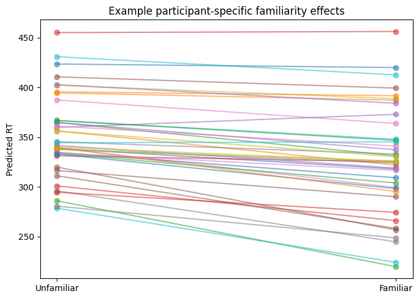
It begs further questions: do the "slower" participants find the "familiar" faces less familiar than we assumed? Are they just doing the task differently? An LMM doesn't tell you why — but it surfaces the pattern, which a subject-means analysis hides. One possibility is that slower participants are simply less familiar with famous faces overall, so they naturally show no familiarity advantage. We can use what we've gleaned here to ask better follow-up questions.
Faces with higher baseline RTs (slower / "harder" faces) also tend to show a stronger PI20 effect. The plot below shows this — items 17 and 35 fan out far more steeply than items 27 and 30, so the size of the PI20 effect clearly varies across items. Again, this raises questions we'd otherwise be ignorant of: why might the PI20 effect differ depending on which face is shown?
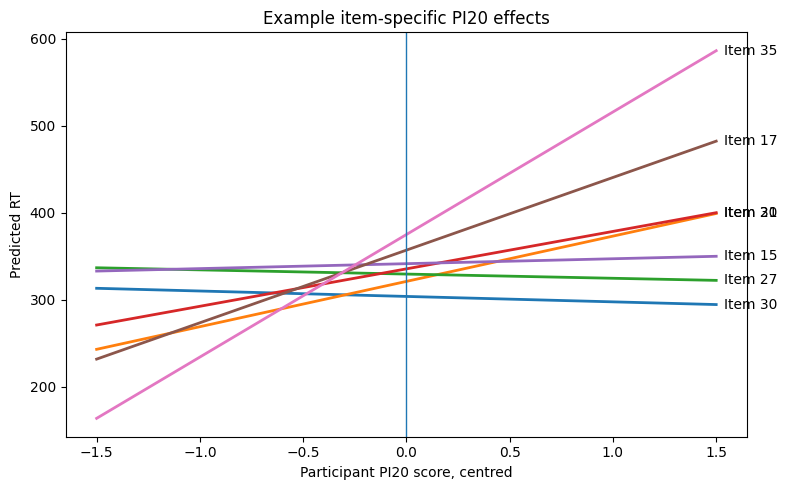
All of the diagnostic plots that follow come from the Assumption Checks menu in GAMLj:
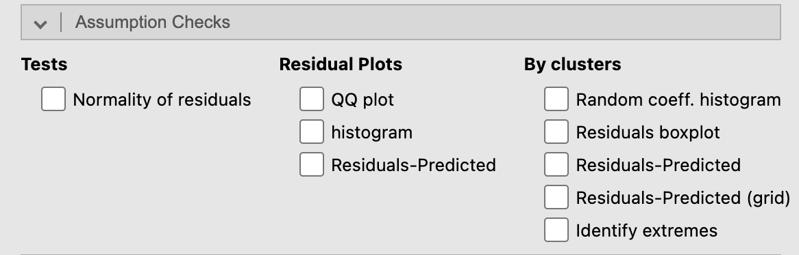
"Identify extremes" labels the most-deviant trials by row number, which is what you'll see annotated on the residual scatter plots below.
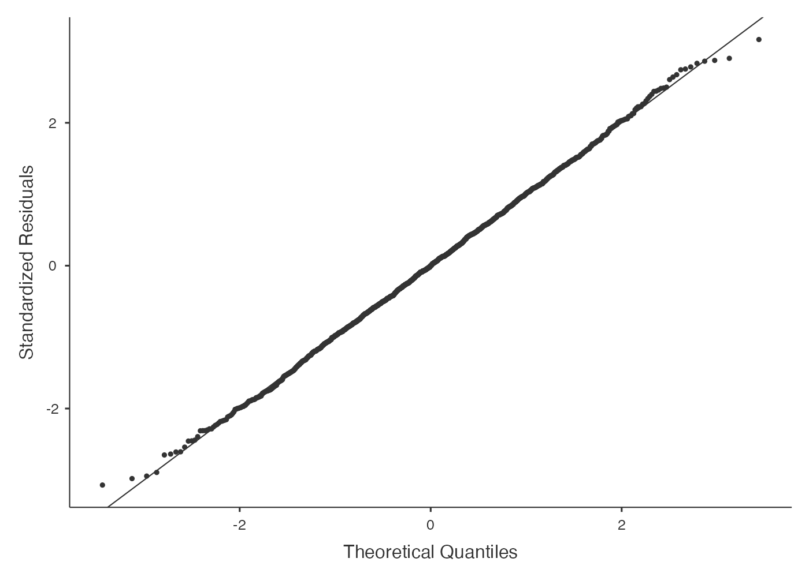
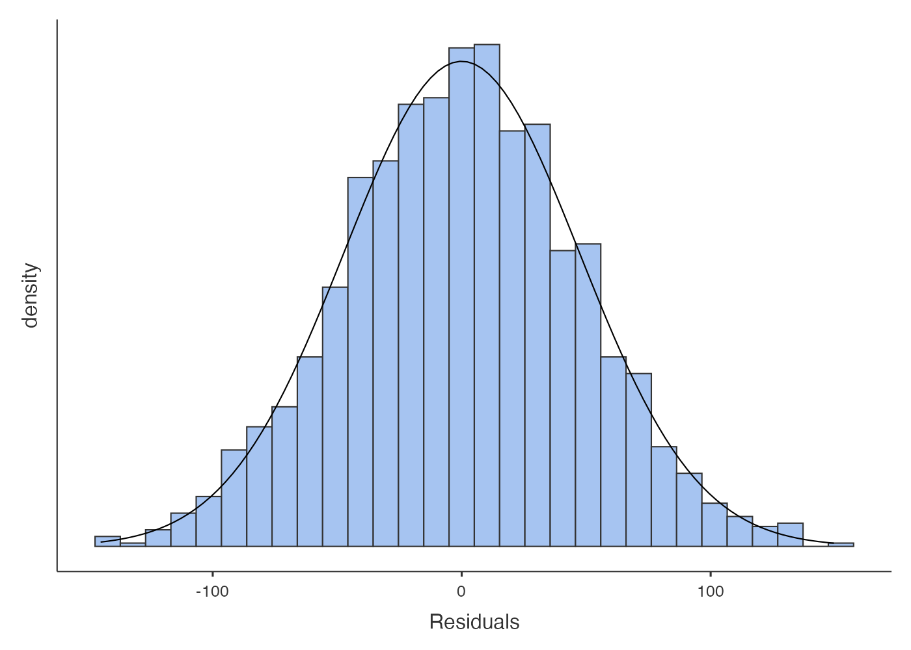
The Q–Q plot checks whether the residuals are approximately normal. Both panels here look fine — a slight upper-tail deviation that's not a deal-breaker for this kind of sample size.
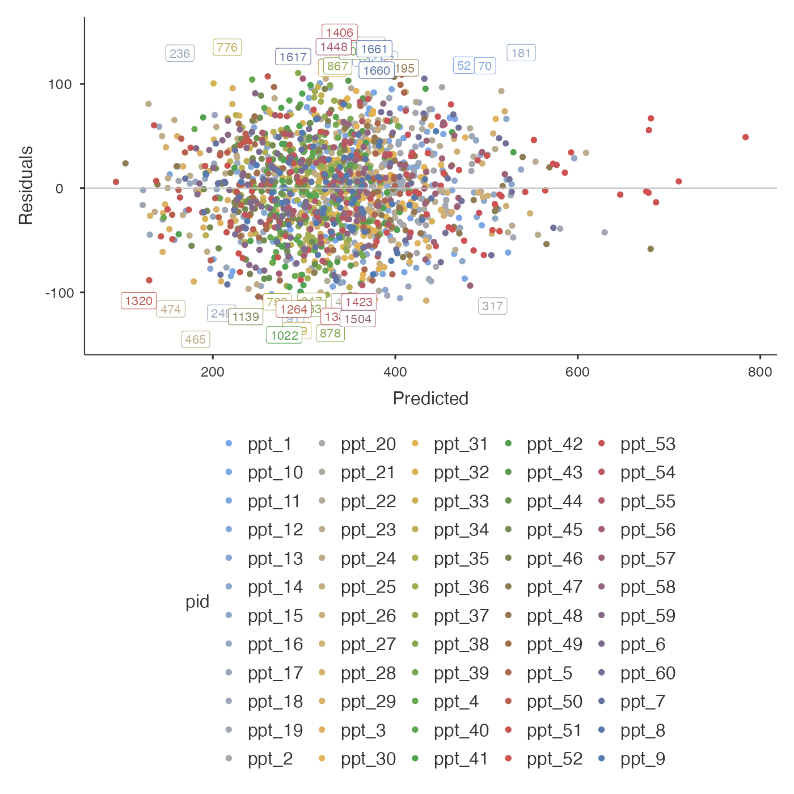
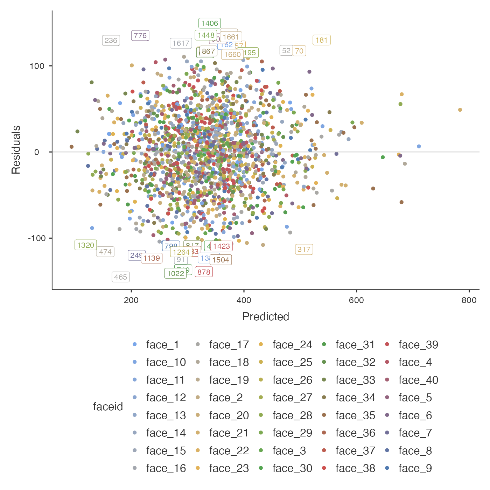
The labelled extreme dots are scattered in colour — they aren't all from one participant or one face. That suggests the outliers are trial-level oddities, not systematically poor participants or items. Not an exclusion issue, but it would be worth re-running on log-RT to see whether the upper tail flattens.
log(RT) instead of raw RT often gives a tighter residual distribution and is standard practice in the RT literature. In Jamovi you can compute logRT as a new variable, swap it in as the DV, and re-fit. The coefficients then describe multiplicative (proportional) effects rather than additive ms shifts.
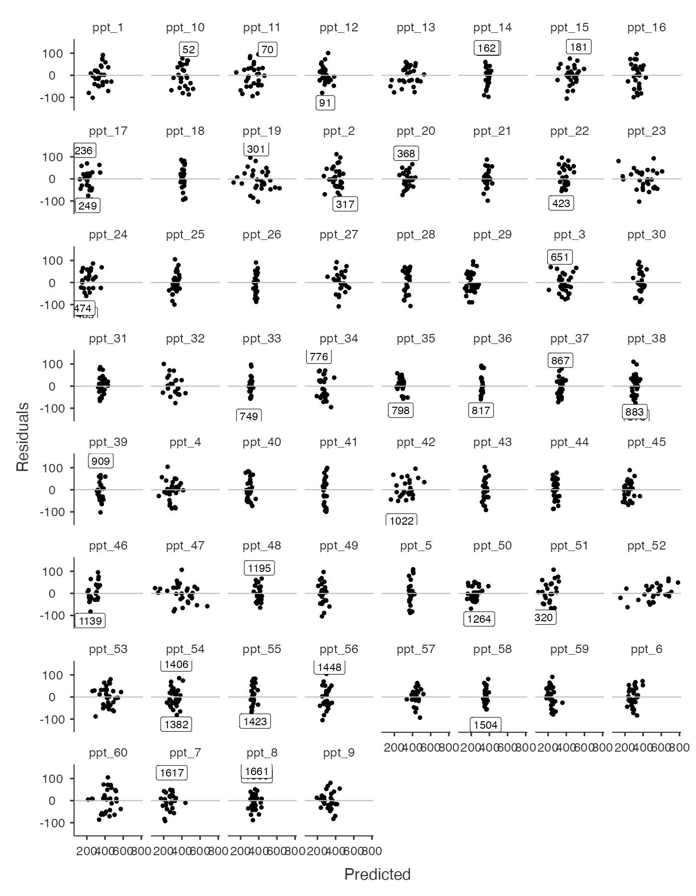
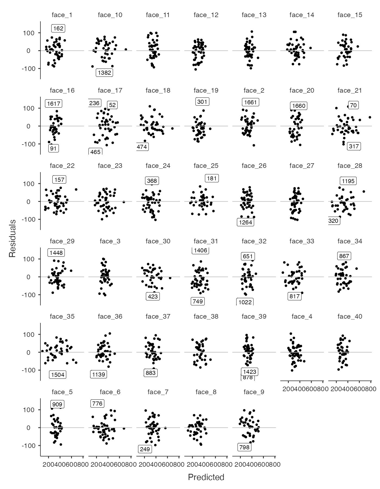
Most participants and most faces look well-fit. The labelled outliers are isolated trials rather than entire participants/faces being consistently misfit. Reassuring.
If you tried to test this study with a repeated-measures ANOVA, you'd hit problems straight away:
For a results section, the model and key numbers could be written up as:
Adjust to taste — many journals will also want the random correlations, the LRT against the nested model, and a note on convergence. But this skeleton has the essentials.
The LMM does three things a traditional analysis cannot:
And as Alex demonstrated, the LMM approach also gives us more precise estimates from our model — all of this now possible just using Jamovi. What a time to be alive.